Jak to będzie wyglądać?
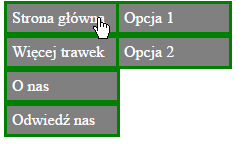W menu rozsuwanym poszczególne znaczniki li po najechaniu, wyświetlają dodatkową listę która zoastała w ich środku utworzona. Zobaczmy po kolei jak tego dokonać wraz z naszą dotychczasową wiedzą zdobytą w tym kursie.
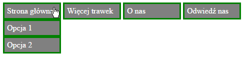Menu poziome
Zacznijmy pokolei towrzenie:
1. Tworzymy listy zagnieżdżone z odnośnikami
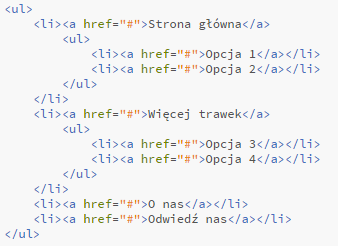2. Konfigurulemy ul, li oraz a tak jak w menu poziomym
Na ul ustawiamy padding i margin 0, aby wygodniej się tworzyło menu
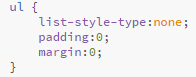 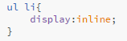 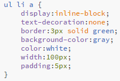3. Zmieniamy właściwości poistion dla obu list.
Liście podrzędnej ustawiamy top:100% dla najechania tuż pod menu nadrzędne, oraz display:none dla jej zniknięcia.
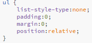 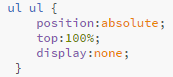4. Zmieniamy właściwość a na display:block dla menu podrzędnego.
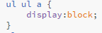5. Ustawiamy pojawienie sie listy podrzędnej po najechaniu na li
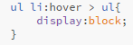6. Przesuwamy odpowiednią listę podrzędna w prawo
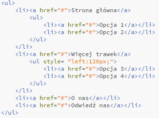Menu pionowe
Zacznamy tworzenie w ten sam sposób co na początku menu poziome:
1. Tworzymy listy zagnieżdżone z odnośnikami
2. Konfigurulemy ul, li oraz tak jak w menu poziomym
Na ul ustawiamy padding i margin 0, aby wygodniej się tworzyło menu. Wartość a pozostawiamy do konfiguracji na następne punkty.
3. Zmieniamy właściwości poistion dla obu list.
Liście podrzędnej ustawiamy top:0% dla najechania na menu nadrzędne, oraz display:none dla jej zniknięcia.
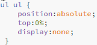4. Zmieniamy właściwości a na całej stronie na display:block.
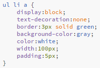5. Ustawiamy pojawienie sie listy podrzędnej po najechaniu na li
6. Przesuwamy całą listę podrzędna w prawo
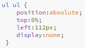